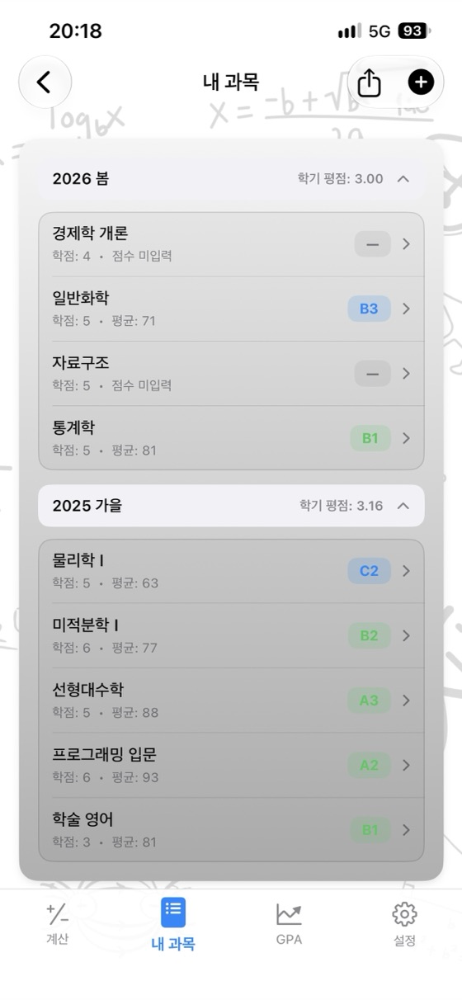
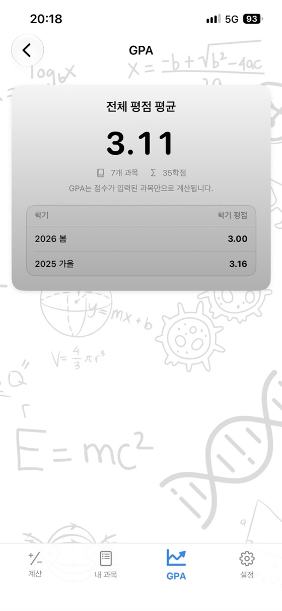
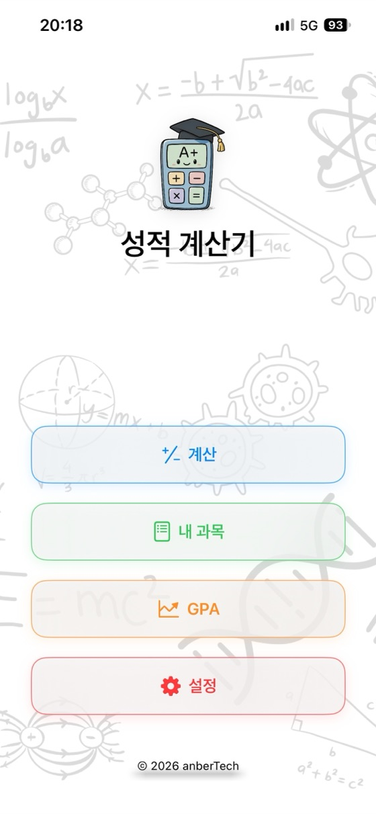
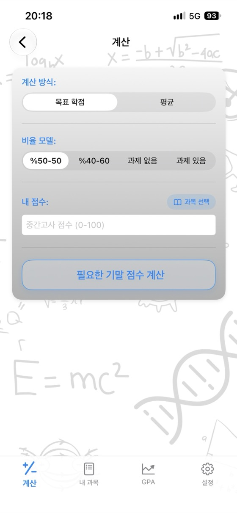
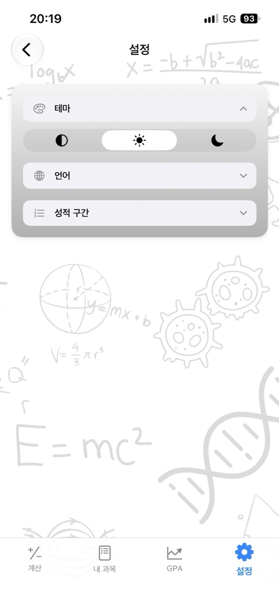

내 성적을 한눈에,
미래를 계획하세요.
과목 평균, 필요한 기말 점수와 평점 평균(GPA)을 앱 하나로. 광고 없음, 계정 불필요, 완벽한 오프라인 지원.
- ✓ 무료
- ✓ 광고 없음
- ✓ 계정 불필요
- ✓ 오프라인 지원


지금 바로 계산하기
앱을 다운로드하기 전에 여기서 먼저 사용해 보세요. 점수와 반영 비율을 바꾸면 결과가 즉시 업데이트됩니다.
기말고사 (%): 60%
기말고사 (%): 60%
무료 웹 계산기
설치나 회원가입 없이 브라우저에서 바로 사용해 보세요. 입력한 성적 데이터는 기기 밖으로 전송되지 않습니다.
왜 성적 계산기인가요?
과목 평균
중간고사, 기말고사, 과제 점수와 각각의 반영 비율을 입력하면 가중 평균과 학점을 즉시 확인할 수 있습니다.
필요한 기말 점수
각 학점을 받기 위해 기말고사에서 받아야 하는 최소 점수를 한 화면에서 확인하세요.
GPA 관리
학기별로 내 과목을 저장하면 학기 평점과 전체 평점 평균(GPA)이 자동으로 계산됩니다.
맞춤형 성적 기준
우리 학교 기준에 맞게 학점 구간과 평점을 직접 수정할 수 있습니다.
PDF 성적 보고서
탭 한 번으로 내 과목과 평균을 PDF 파일로 공유하세요.
17개 언어 지원
한국어, 영어, 스페인어, 독일어, 일본어, 아랍어, 튀르키예어 등을 지원합니다.
개인정보 보호 최우선
계정, 광고, 추적이 없습니다. 모든 데이터는 기기에만 안전하게 보관됩니다.
오프라인 작동
시험 기간이나 도서관 등 인터넷이 없는 곳에서도 언제든지 사용할 수 있습니다.
앱 미리보기



자주 묻는 질문
과목 평균은 어떻게 계산하나요?
각 점수에 반영 비율(가중치)을 곱한 뒤 모두 더합니다. 중간고사 40%, 기말고사 60%라면 평균 = 중간고사 × 0.40 + 기말고사 × 0.60입니다. 중간고사 62점, 기말고사 75점일 때 62 × 0.40 + 75 × 0.60 = 69.8이 됩니다. 과제가 있다면 과제 가중 점수도 더하며, 반영 비율의 총합은 100%여야 합니다.
패스하려면 기말고사에서 몇 점을 받아야 하나요?
필요한 기말 점수 = (목표 평균 − 중간고사 × 중간고사 비율) ÷ 기말고사 비율로 계산합니다. 반영 비율 40%인 중간고사가 55점이고 패스 기준 평균이 50점이라면 (50 − 22) ÷ 0.60 = 46.7이므로 기말고사에서 최소 47점을 받아야 합니다. 성적 계산기는 모든 학점에 필요한 기말 점수를 한 번에 보여줍니다.
평점 평균(GPA)은 어떻게 계산하나요?
각 과목의 평점(A = 4.0, B = 3.0 …)에 이수학점을 곱한 뒤 모두 더하고, 이를 총 이수학점으로 나눕니다. 그 결과가 4.0 만점 기준의 전체 평점 평균(GPA)입니다.
학점 구간 기준은 모든 학교가 동일한가요?
아닙니다. 학점 구간과 평점은 국가, 대학교, 심지어 수업마다 다릅니다. 앱에서는 본인의 학교 기준에 맞게 성적 평가 기준을 직접 수정할 수 있습니다.
기말고사 최소 기준 점수가 무엇인가요?
일부 학교나 수업에서는 전체 평균이 충분하더라도 기말고사 점수가 일정 기준(예: 30점, 45점 또는 50점) 미만이면 F(낙제) 처리됩니다. 최소 기준 점수를 입력하면 이를 반영해 필요한 기말 점수를 계산해 줍니다.
성적 계산기는 무료인가요?
네. App Store에서 광고, 구독, 인앱 결제 없이 완전히 무료로 다운로드할 수 있습니다. 이 웹사이트의 계산기들도 모두 무료입니다.
입력한 성적은 어디에 저장되나요?
오직 사용자의 기기에만 저장됩니다. 계정을 만들 필요가 없으며 서버로 어떠한 데이터도 전송되지 않습니다. 웹 계산기에 입력한 성적 역시 브라우저를 벗어나지 않습니다.
Android 버전도 있나요?
Android 버전은 곧 Google Play에 출시될 예정입니다. 현재는 App Store에서 iPhone 및 iPad용(iOS 17.6 이상)으로 이용하실 수 있습니다.
모든 과목 성적을 한곳에서 관리하세요
무료. 광고 없음. 계정 불필요.